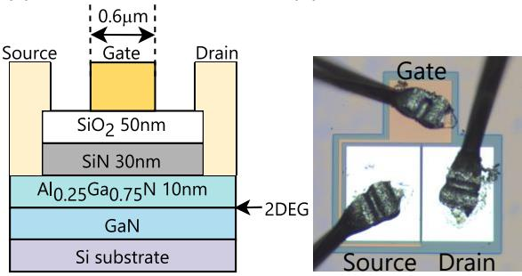
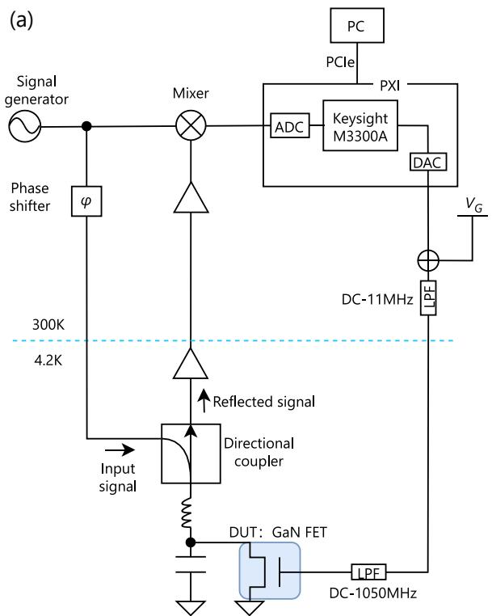

为什么需要射频测量
量子点读出依赖紧邻的电荷传感器——QPC 电荷传感或单电子晶体管（single-electron transistor, SET）——把量子点电子数的跳变转换成电导变化。传感器在最灵敏工作点的电导通常为 ，即电阻 。传统做法是让直流/低频电流流过传感器，再经数米长的同轴线引出制冷机到室温放大器；这段引线的寄生电容高达数百皮法（典型微型同轴线约 ，常用长度累积约 ），与传感器电阻构成 RC 低通，把测量带宽压在
量级。数十 kHz 的带宽只能看到时间平均信号，无法追踪微秒量级的单电子隧穿事件，也就做不了单发读出；同时低频段恰是 噪声（见电荷噪声）最重的区域。
射频反射测量（radio-frequency reflectometry）的出路是阻抗变换：在传感器近旁放一个贴片电感 ，让它与不可避免的寄生电容 组成谐振电路（储能电路，tank circuit），把传感器的高阻抗变换到传输线的特性阻抗 附近。这样测量频率被抬升到谐振频率 的载波上，带宽由谐振电路的品质因子决定，可达数 MHz——比直流方案高约三个数量级。1998 年 Schoelkopf 等人首先在单电子晶体管上实现（RF-SET），带宽达百 MHz 量级；此后该技术被移植到 QPC（RF-QPC）和栅极（RF-DGS/栅极射频传感）上，只需改动片外电路而不需改动样品设计。多通道扩展时”每通道一个电感谐振器”成为体积瓶颈，替代路线是把 SET 输出当电流直接片上频分复用放大（跨阻放大器，免谐振腔）——见单电子晶体管词条的 CTIA 读出一节。反射测量也是单体电荷涨落器研究的主力读出：输运峰边的电报噪声时间序列经 Allan 方差/隐马尔可夫分析即可逐个表征 TLF——见电荷噪声词条的单体 TLF 表征一节。
理论模型
反射系数
射频信号沿特性阻抗 的传输线入射到负载 上，阻抗失配处的电压反射系数为
时无反射，入射功率被负载全部吸收； 时全反射。入射功率 中被反射回来的部分为
实验上用网络分析仪测散射参数，（单位 dB）。注意 不是线缆的直流电阻，而是 （、 为单位长度电感与电容）定义的高频特性阻抗。
储能电路与阻抗匹配
典型的负载端电路是：量子器件电阻 （如 ）与电感 串联，片上及引线寄生电容 并联在电阻两端。整体输入阻抗为
谐振条件是阻抗虚部为零，由此解出谐振角频率与谐振时的输入阻抗：
绝大多数情况下 （即 ），谐振频率简化为
只由 与 决定，与器件电阻无关。谐振时联立反射系数公式得
可见 被转换为 ：当谐振阻抗 恰好等于 （阻抗匹配）时 ，且在此点附近 对 的变化最陡峭——器件电阻的微小变化引起反射系数的剧烈变化。因此最佳工作点是让传感器电阻落在匹配电阻
附近。以 、 为例， 量级，恰与 QPC 灵敏区 接近（模拟给出 、 时最灵敏点约 ）。
品质因子与带宽
在谐振频率附近（），输入阻抗可化为等效串联 RLC 电路 ，其中有效串联电阻
即器件电阻被变换到串联臂上的镜像。电路的无载（内部）品质因子与外部品质因子分别为
有载品质因子 。谐振电路的相对带宽
即 ：品质因子与带宽互相制约。对比 与 可区分两种耦合状态（施密特圆上直观可见）：
- （即 ）：欠耦合（under-coupled），带宽受 限制；
- （即 ）：过耦合（over-coupled），带宽受外部 限制。
高电阻器件（如 Si-MOS 中 可达数百 k 乃至 M，而典型量子点电阻 ）往往落在过耦合区，灵敏度与带宽都被外部负载压缩，需要额外的匹配电容 把耦合状态调回匹配点。提高带宽只能靠压低 （ 升高）而非增大 ——增大 会同时压低 与带宽。
灵敏度公式
用边带法标定灵敏度：给器件叠加频率 的已知电导（或电荷）调制，载波 的反射谱在 处出现边带。RF-QPC 的电导灵敏度与电荷灵敏度分别为
其中 来自上下两个边带， 是频谱仪分辨带宽（常设 ）， 是边带信噪比（dB）， 为一个电子电量乘以杠杆臂因子。灵敏度决定了积分时间：电荷灵敏度 意味着单个电子隧穿事件可在微秒量级内被分辨。在大规模阵列侧，同样的物理被推到系统级指标：1:1024 多路复用农场以 外推出 160 ps 的最小积分时间，5 分钟扫完 1024 个器件（见大规模量子点多路复用表征）。
零拍解调
反射信号经低温放大后与本振（LO，与载波同频）在混频器中相乘。设器件电阻以频率 小幅度调制，进入混频器前的信号为
与 相乘并利用 展开，各项集中在 与 两个频段；由于 ，低通滤波器滤除 附近的分量后，基带输出
正比于 ，即实时复现了器件电阻的变化。若 LO 与载波存在相位差，同样的解调把幅度信息分到同相（）与正交（）两路，可同时读出 与相位 。
电阻感应与电容（色散）感应
被测阻抗的变化分两类：
- 电阻变化（RF-SET/RF-QPC）：谐振频率 不变，只改变谐振谷的深度与相位跳变的锐度；
- 电容变化（栅极射频传感）：量子点的量子电容或隧穿电容改变总电容，谐振谷位置移动、相位 偏转，属色散型响应，与色散读出共享同一物理图像。
参数与量级
| 量 | 典型值 | 来源 |
|---|---|---|
| 传输线特性阻抗 | 射频标准 | |
| 传感器灵敏区电阻 | （）；量子点电阻 ；Si-MOS SET 可达数百 k–M | ； |
| 直流引线电容 | –（ 同轴线） | ； |
| 直流测量带宽 | ； | |
| 片上寄生电容 | GaAs –；石墨烯 –（个别 ） | |
| 贴片电感 | –（常用 ） | |
| 谐振频率 | –（GaAs 实测 ） | |
| 探测带宽 | 数 MHz（GaAs RF-QPC ；石墨烯 ；RF-DGS ） | |
| 电导灵敏度 | （GaAs RF-QPC） | |
| 电荷灵敏度 | （GaAs RF-QPC）；经典实验范围 – | |
| 读出保真度 | （积分 ，带宽 ，Si-MOS 劈裂栅） |
附录 B 汇总了经典射频反射实验的参数对比：谐振频率从 （RF-QPC）到 （RF-SET），带宽 –，最优电荷灵敏度 （Schoelkopf 的 RF-SET）。
实验实现与特征
信号链
典型稀释制冷机中的反射链路：射频源输出经定向耦合器分两路——一路直达混频器 LO 端作参考；另一路经射频开关、滤波与约 的冷端衰减后，经装在混合腔冷盘上的定向耦合器到达样品端 tank 电路。反射波从耦合器直通端引出，先后经 4 K 冷盘上的低温放大器（约 增益，如工作于 – 的 HEMT 放大器）与室温放大器（约 ），再进混频器 RF 端解调，最后经低通滤波与电压前放（SR560，10–50 倍）由示波器或采集卡读取。样品板上用 T 型偏置器（bias tee）把射频与直流/低频线合到同一电极，反射端常接约 电容到地为载波提供回路。低温放大器额定功耗约 ，会把二级冷盘温度抬高约 1 K，是链路设计中的实际约束。
标定流程
- 找谐振：不接解调电路，用网络分析仪扫 ，调节传感器栅压观察谐振谷位置与深度随电阻的变化，确定 与最佳匹配工作点；由 与已知 反推 （如 、 得 ）。
- 对照验证：同时记录解调电压 与传统输运电流 ，扫描直接及非直接耦合的栅极，确认两者峰位一一对应，证明射频信号确实载有量子点电荷态信息。
- 边带标定：在栅极上叠加已知幅度的正弦/方波调制（如 、），用频谱仪（分辨带宽 ）测载波两侧边带的信噪比（典型 ），结合独立测得的电导变化量代入灵敏度公式；扫描调制频率直至边带跌落 ，即得探测带宽。
三种接法
- RF-SET / RF-QPC：把 SET 或 QPC 的源漏电阻接入匹配网络，感知邻近量子点的电荷态，是最成熟的方案；
- RF-DGS / 栅极射频传感：匹配网络直接挂到量子点的某个栅极上，读取该栅看到的复导纳（含量子电容），可在电路中串入变容二极管（varactor）使谐振频率电可调（如 加变容二极管），省去专用传感器，利于量子点阵列扩展；缺点是灵敏响应区域窄；
- 腔读出：把量子点嵌入高品质因子的微波谐振腔（或高阻抗谐振腔），读取腔的频移与损耗，与电路量子电动力学架构天然衔接。
已知限制
- 增强型器件的泄漏：耗尽型 GaAs 中射频信号经欧姆接触的低阻通道直达 SET；而 Si-MOS、Si/SiGe 增强型器件中，二维电子气与引线栅极之间存在耦合电容 ——即使 仅 ，对 – 载波其电抗也只有几 k，远小于 ，载波大部经此低阻通道泄漏， 不足 。解法之一是采用劈裂栅（split-gate）射频架构并加入匹配电容，使离子注入区可远离 SET 中心 仍实现高保真读出。
- 回作用：读出功率过大将加热电子、驱动跃迁或饱和放大器；射频载波对二能级系统的持续驱动引入动态耗散（可用 Sisyphus 电阻建模），会明显缩短样品的纵向弛豫时间 。
- 互扰：多个谐振器共用传输线时可能产生读出串扰；不同频率的谐振器挂同一根线做波分复用（wavelength-division multiplexing, WDM）是多通道并行读取的扩展路径。
反馈控制扩展动态范围：RF 反射传感器的速度-范围权衡（高带宽测量时传感器易饱和）由反馈解决——闭环控制实时调整传感器偏置，跟踪被测电荷的大幅漂移而不饱和。动态范围扩展后，传感器在高速模式下也能覆盖从单电子到多电子的宽电荷范围。

反馈控制的 RF 传感器：闭环偏置调整跟踪电荷漂移——速度-范围权衡的反馈解法。图源：arXiv:2307.05077，Fig. 1。

动态范围扩展效果：开环 vs 闭环的可测电荷范围对比。图源：arXiv:2307.05077，Fig. 2。
与其他概念的关系
- 被测对象通常是库仑阻塞区边缘的单电子隧穿事件；射频读出的高速率使单发读出与实时电荷态追踪成为可能，扫描双栅即可高速绘制电荷稳定图。
- 传感器本体见QPC 电荷传感；不用专用传感器、直接读栅极复导纳的变体见栅极射频传感；读取谐振腔频移的推广形式见色散读出。反射测量需要定向耦合器分离入射/反射波——多通道扩展时的硬件开销可以改用传输式架构规避：SET 经超导电感构成阻抗变换网络、直接测透射，性能与反射式相当（见单电子晶体管的传输式 RF-SET 一节）。
- 测量频率抬升到百 MHz 后避开了低频 电荷噪声区，链路噪声转而由首级低温放大器决定，进一步可用参量放大器逼近量子极限。
- 在Si-MOS 与 Si/SiGe 增强型器件中，二维电子气（见二维载流子气）与栅极的耦合电容造成射频泄漏，是硅基射频读出的特有难题。
- 高带宽与频分复用能力是量子点阵列规模化读出的关键技术之一。
参考文献
- 射频反射测量在硅体系电荷/自旋读出中的应用：Zwanenburg et al., RMP 85, 961 (2013)、Veldhorst et al., Nature 526, 410 (2015)。
完整文献库（含各篇站内全文页）见 参考文献库。